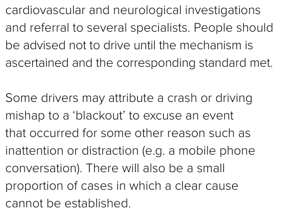

Does better retrieval improve fitness judgment?
Engineering reference agreement, not clinical accuracy. Each model/arm has 33 cases and three calls per case. Repeats are aggregated within patients. The production workflow, rules and default retrieval remain unchanged.
Evidence delivered to the judge
Coverage over the same 45 labeled module scopes. At most five whole original passages and 9,000 evidence bytes; this is case-packet coverage, separate from module-level Top-5 recall.
| Evidence arm | Original-text packet coverage |
|---|---|
| Hybrid RRF / original allocation | 80.74% |
| Method 7 / original allocation | 82.22% |
| Method 7 / case allocation | 86.67% |
| Method 9 / original allocation | 84.44% |
| Method 9 / case allocation | 84.44% |
Actual judgments
Failures remain in the agreement denominator. Abstentions against other labels are accepted insufficient-information answers against a different engineering reference. They require case review, rather than automatically establishing inappropriate clinical abstention. VAL-MIX-09 and VAL-MIX-10 have no verified fact values and both have an insufficient-information engineering reference. The independent analysis reports that subgroup separately.
| Model | Evidence arm | Correct / recorded | Accepted | Failed | Abstentions vs other labels |
|---|---|---|---|---|---|
| llama3:8b | Hybrid RRF / original allocation | 45/99 (45.45%) | 93/99 | 6 | 36 |
| llama3:8b | Method 9 / case allocation | 45/99 (45.45%) | 99/99 | 0 | 42 |
| llama3:8b | Method 9 / original allocation | 42/99 (42.42%) | 96/99 | 3 | 42 |
| llama3:8b | Method 7 / case allocation | 42/99 (42.42%) | 96/99 | 3 | 42 |
| llama3:8b | Method 7 / original allocation | 39/99 (39.39%) | 93/99 | 6 | 42 |
| qwen3.5:4b-q4_K_M | Hybrid RRF / original allocation | 46/99 (46.46%) | 96/99 | 3 | 45 |
| qwen3.5:4b-q4_K_M | Method 9 / case allocation | 42/99 (42.42%) | 96/99 | 3 | 45 |
| qwen3.5:4b-q4_K_M | Method 9 / original allocation | 45/99 (45.45%) | 96/99 | 3 | 45 |
| qwen3.5:4b-q4_K_M | Method 7 / case allocation | 42/99 (42.42%) | 96/99 | 3 | 45 |
| qwen3.5:4b-q4_K_M | Method 7 / original allocation | 45/99 (45.45%) | 96/99 | 3 | 45 |
Paired effects: classification and contract
Net classification = valid wrong-to-correct minus valid correct-to-wrong. Net contract = failed-to-correct minus correct-to-failed. Both contribute to all-call agreement, but only the first describes a change between valid classifications. Variation between identical requests cannot be attributed to evidence allocation.
| Model | Comparison | Mean patient agreement change | Net classification calls | Net contract calls | Identical-request outcome / contract variations |
|---|---|---|---|---|---|
| llama3:8b | Method 7 retrieval versus RRF | -6.06 pp | +0 | -6 | 0 / 0 |
| llama3:8b | Method 9 retrieval versus RRF | -3.03 pp | +0 | -3 | 0 / 0 |
| llama3:8b | Method 7: new versus original allocation | +3.03 pp | +0 | +3 | 0 / 6 |
| llama3:8b | Method 9: new versus original allocation | +3.03 pp | +0 | +3 | 0 / 0 |
| llama3:8b | Method 7 plus allocation versus RRF | -3.03 pp | +0 | -3 | 0 / 0 |
| llama3:8b | Method 9 plus allocation versus RRF | +0.00 pp | +0 | +0 | 0 / 0 |
| qwen3.5:4b-q4_K_M | Method 7 retrieval versus RRF | -1.01 pp | -1 | +0 | 0 / 0 |
| qwen3.5:4b-q4_K_M | Method 9 retrieval versus RRF | -1.01 pp | -1 | +0 | 0 / 0 |
| qwen3.5:4b-q4_K_M | Method 7: new versus original allocation | -3.03 pp | -3 | +0 | 0 / 0 |
| qwen3.5:4b-q4_K_M | Method 9: new versus original allocation | -3.03 pp | -3 | +0 | 0 / 0 |
| qwen3.5:4b-q4_K_M | Method 7 plus allocation versus RRF | -4.04 pp | -4 | +0 | 0 / 0 |
| qwen3.5:4b-q4_K_M | Method 9 plus allocation versus RRF | -4.04 pp | -4 | +0 | 0 / 0 |
VAL-MIX-02
Engineering reference: temporarily_unfit. The verified record documents a Blackout and an unresolved mechanism. Clinical review remains pending.
| Model | Evidence arm | Actual outcomes: repeats 0 / 1 / 2 | Restriction passage cited |
|---|---|---|---|
| llama3:8b | Hybrid RRF / original allocation | insufficient_information insufficient_information insufficient_information | 3/3 |
| llama3:8b | Method 9 / case allocation | insufficient_information insufficient_information insufficient_information | 3/3 |
| llama3:8b | Method 9 / original allocation | insufficient_information insufficient_information insufficient_information | 3/3 |
| llama3:8b | Method 7 / case allocation | insufficient_information insufficient_information insufficient_information | 0/3 |
| llama3:8b | Method 7 / original allocation | insufficient_information insufficient_information insufficient_information | 0/3 |
| qwen3.5:4b-q4_K_M | Hybrid RRF / original allocation | insufficient_information insufficient_information insufficient_information | 3/3 |
| qwen3.5:4b-q4_K_M | Method 9 / case allocation | insufficient_information insufficient_information insufficient_information | 3/3 |
| qwen3.5:4b-q4_K_M | Method 9 / original allocation | insufficient_information insufficient_information insufficient_information | 3/3 |
| qwen3.5:4b-q4_K_M | Method 7 / case allocation | insufficient_information insufficient_information insufficient_information | 3/3 |
| qwen3.5:4b-q4_K_M | Method 7 / original allocation | insufficient_information insufficient_information insufficient_information | 0/3 |
The seventh route's new packet contains the added Blackout work-up passage. A supplied or validly cited passage does not establish that its restriction was correctly applied. See the paired viewer for every explanation and every supplied original.
VAL-MIX-06
Engineering reference: temporarily_unfit. The verified record documents a Blackout and an unresolved mechanism. Clinical review remains pending.
| Model | Evidence arm | Actual outcomes: repeats 0 / 1 / 2 | Restriction passage cited |
|---|---|---|---|
| llama3:8b | Hybrid RRF / original allocation | insufficient_information insufficient_information insufficient_information | 3/3 |
| llama3:8b | Method 9 / case allocation | insufficient_information insufficient_information insufficient_information | 0/3 |
| llama3:8b | Method 9 / original allocation | insufficient_information insufficient_information insufficient_information | 0/3 |
| llama3:8b | Method 7 / case allocation | insufficient_information insufficient_information insufficient_information | 3/3 |
| llama3:8b | Method 7 / original allocation | insufficient_information insufficient_information insufficient_information | 0/3 |
| qwen3.5:4b-q4_K_M | Hybrid RRF / original allocation | insufficient_information insufficient_information insufficient_information | 3/3 |
| qwen3.5:4b-q4_K_M | Method 9 / case allocation | insufficient_information insufficient_information insufficient_information | 0/3 |
| qwen3.5:4b-q4_K_M | Method 9 / original allocation | insufficient_information insufficient_information insufficient_information | 0/3 |
| qwen3.5:4b-q4_K_M | Method 7 / case allocation | insufficient_information insufficient_information insufficient_information | 0/3 |
| qwen3.5:4b-q4_K_M | Method 7 / original allocation | insufficient_information insufficient_information insufficient_information | 0/3 |
The seventh route's new packet contains the added Blackout work-up passage. A supplied or validly cited passage does not establish that its restriction was correctly applied. See the paired viewer for every explanation and every supplied original.
Original restriction and engineering consistency check
The added passage is source AFTD2022-EXP-05643c50d6cf5973, section 1.2.1, PDF page 68, printed page 57. Native PDF text and the cited rectangle match the frozen passage. The neighboring vasovagal qualification still requires case-specific assessment. This source check is not independent clinical adjudication.

Inspect and reproduce
- Interactive paired viewer: case, model, repeat and evidence arm
- Independent analysis, patient aggregates and focus-case explanations
- Independent human support-review worksheet for the two focus cases
- Independent integrity audit: exact conditions, requests and actual responses
- All 990 original responses, including failed responses
- Preserved ten-route retrieval comparison
- Twelve new prospective cases: independent annotation and readiness gate
- Completion summary and provenance
What remains
- Independent human review of explanation support and guideline applicability, including the two Blackout cases.
- Two independent reviewers label the twelve new cases; adjudicate disagreements and freeze reference labels before any model test or strategy tuning.
- Integrate the prospective runner and live native-index preflight under an explicit pre-inference plan. Then run the frozen strategies on that unseen cohort, retain failures and compare patient-level results before a production change.
- Resolve remaining corpus layout and applicability issues; clinical approval remains separate from engineering validation.